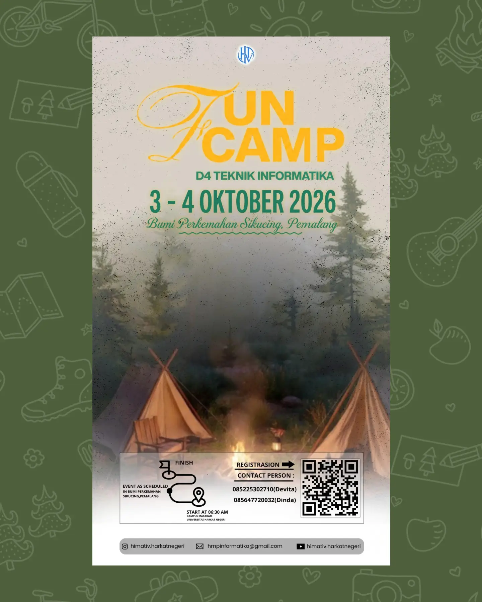
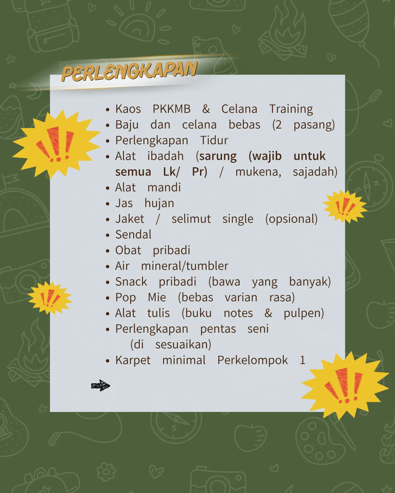
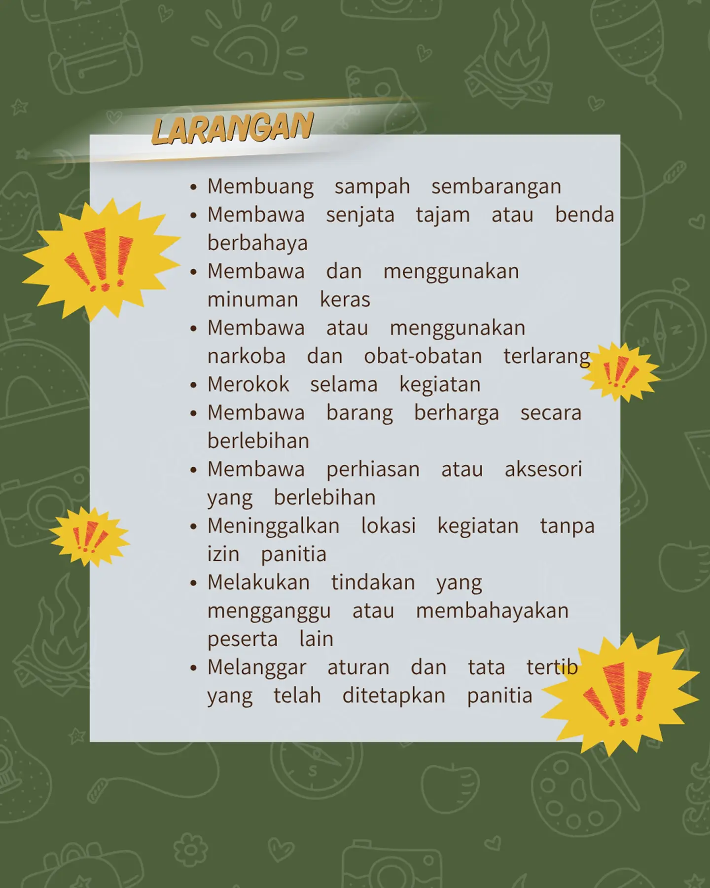

Rincian Acara Funcamp D4 Teknik Informatika 2026

| Nama | Funcamp D4 Teknik Informatika tahun 2026 |
|---|---|
| Jenis |
|
| Diselenggarakan | HIMATIV (Himpunan Mahasiswa Teknik Informatika Vokasi) Universitas Harkat Negeri |
| Tanggal | Sabtu - Minggu, 3 - 4 Oktober 2026 |
| Waktu : | 06.30 WIB - Selesai |
| Tempat | Bumi Perkemahan Sikucing, Pemalang |
| Kegiatan |
|




Profil Habib Muzakki
| Nama lengkap | Habib Muzakki |
|---|---|
| Nama panggilan | Habib |
| Asal | Kota Serang |
| Jurusan (Prodi) | D4 Teknik Informatika |
| Fakultas | Sekolah Vokasi |
| Asal SMA | MAN 2 KOTA SERANG |
| Asal jurusan SMA | Agama |
| Lomba | Finalis OSN-K Informatika tahun 2025 |
| Coding |
|
| Tools |
|
| Portfolio |
Pada Sabtu, 03 Oktober 2026, saya pergi ke kampus pada pukul 06.15 WIB, dan pas disana, itu sudah orang, tapi masih sepi, lalu saya pun menunggu di sekitar tempat masjid itu, dan sambil ngobrol dikit dan makan roti dulu, lalu pas 07.00 WIB, saya pun ke lapangan Sport Center untuk absen dan pemberitahuan dulu sebelum berangkat ke Bumi Perkemahan Sikucing, Pemalang.
Dan naik truk untuk kesana, dan pas saya di bus, saya duduk dengan kating (kakak tingkat semester 3) dan teman-teman yang sama angkatan, dan pas di bus itu, mereka pada main kartu, terus main hp, terus makan, terus ada yang tidur bentar, dan selama perjalanan itu, saya sering mendokumentasi dengan hp saya, dan pas bus itu juga, lagi seru-seru heboh dan seru gitu, karena asik.
Dan selama perjalanan itu kira-kira 3 jam-an, dan pas sampai disana, itu sudah banyak orang yang datang, dan pas saya turun dari bus dan saya pun ke Tempat Aula itu untuk istirahat, lalu pun saya pun mulai sidang 1 selama 1 jam, lalu dilanjutkan dengan sholat zuhur, setelah sholat zuhur, dilanjutkan dengan sidang 2.
Lalu dilanjutkan dengan makan siang, dan setelah makan siang, dilanjutkan dengan sidang 3, lalu dilanjutkan dengan sambutan dari dosen D4 Teknik Informatika, lalu dilanjutkan dengan pengenalan DPM (Dewan Perwakilan Mahasiswa), lalu dilanjutkan dengan pengenalan Study Club Forti (Forum Riset Teknologi Informasi), lalu dilanjutkan dengan pengenalan Study Club Plugin (Front End, Back End dan Machine Learning), lalu dilanjutkan dengan pengenalan Organisasi HIMATIV (Himpunan Mahasiswa Teknik Informatika Vokasi), lalu dilanjutkan dengan pengenalan Organisasi PERMIKOMNAS (Perhimpunan Mahasiswa Informatika dan Komputer Nasional), lalu dilanjutkan dengan pengenalan Study Club Game Dev Komunitas Harkat Negeri, lalu dilanjutkan dengan pengenalan Study Club Cyber Harkat Negeri, lalu dilanjutkan dengan pengenalan seluruh panitia Funcamp Makrab.
Dilanjutkan dengan malam makan dan sholat magrib, lalu dilanjutkan dengan sidang 3 yaitu pemilihan ketua angkatan D4 Teknik Informatika, lalu dilanjutkan dengan pentas seni, dan setelah pentas seni sampai 23.30 WIB, lalu dilanjutkan dengan istirahat.
Dan pada minggu, 04 Oktober 2026, saya bangun tidur pada pukul 04.30 WIB, lalu saya pun sholat subuh, lalu dilanjutkan dengan senam pagi, lalu dilanjutkan dengan sarapan pagi, lalu dilanjutkan dengan games seru.